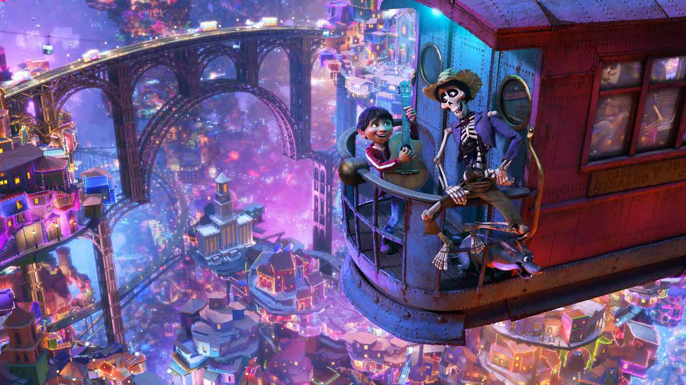

A Santa Cecilia au Mexique, Miguel, un petit garçon très proche de son arrière-grand-mère, Coco, se voit raconter son histoire familiale mouvementée chaque Jour des Morts. Alors que tous les membres de sa famille travaillent dans la confection de chaussures, le garçon est passionné par la musique et la figure du chanteur Ernesto de La Cruz. Seulement, la musique est bannie de la famille depuis des générations, et plus précisément depuis qu'Imelda Rivera, une de ses ancêtres a été abandonnée sans explication par son mari, un musicien inconséquent.
Dirigez vous vers
L'histoire du film

Ou bien vers
La tradition del dia de los muertos 
Ou encore vers
Les personnages du film